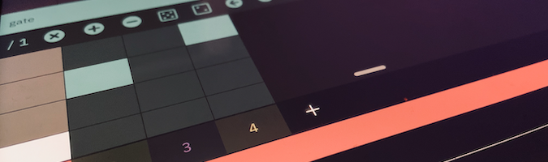

Overview
cykle is an innovative, semi-generative melodic step sequencer for iOS that works by abstracting away all musical parameters (such as pitch, velocity, length, transposition and more) into individual sequences, by way of decoupled sequencer lanes. thus, the interplay between simple elements easily yields complex and musically interesting results.
Features
- consistent 5-star rating on the App Store ★★★★★
- works on both iPhone and iPad (portrait and landscape mode)
- works as an Audio Unit (AUv3) MIDI plugin or as a standalone (CoreMIDI) app
- sample-accurate sequencing engine
- slick and responsive native UI
- pattern snapshots selectable via MIDI Program Change
- pitch selectable by MIDI note input (arp and chord modes)
- configurable tempo, scale and key
- every channel can be routed to a separate MIDI destination and channel
- every channel sends MIDI note- and pitch-bend data as well as an arbitrary number of MIDI continuous control (CC) messages
- AUv3 state-saving
- randomization features
- save and load patterns
- independent sequencer lanes for the following parameters:
- pulse
- pitch
- rest
- step length
- chance
- velocity
- accent
- gate length
- chance
- ratchet (note repeat)
- accidental (flatten/sharpen)
- transpose
- chord inversion
- octave
- pitch bend
- mappable MIDI CC values (e.g., filter cutoff, resonance, envelope, etc.)
- sequences can be instantly transformed by the following actions:
- shifted left/right/up/down
- rotate
- randomize
- mirror
- reverse
- double
- bisect
- configurable clock division rate per sequencer lane
- MIDI clock output
- Ableton Link support
- an offset can be added to timing to compensate for MIDI latency
- works without internet connection
- no push notifications
- no ads or in-app purchases
- no third-party behavioural tracking tools
- ongoing development and support, many new features on the roadmap
Frequently asked questions
how does this work? is there a manual?
yes, the manual is here.why don't hear I anything?
cykle doesn't make any sound by itself. you will need to connect to a MIDI-compatible synthesizer app on your device, load it in an AUv3-compatible host (such as Audiobus or AUM) or connect it to an external synthesizer, computer or any other sound generating device.how do I select a MIDI destination or channel?
swipe up on the channel view and tap Output destination.are the snapshots MIDI controllable?
yes, you can switch snapshots by sending MIDI program changes (bank select 1-8) to cykle's MIDI input.what is MIDI Input mode?
an active MIDI input mode allows you to control the pitch of a pattern via external MIDI input, such as an external MIDI keyboard controller. select the MIDI input source in the menu > Settings > MIDI Input source.how can I send MIDI CC messages?
add a control sequence to your channel and select the desired control number by tapping the label (74 - Brightness) on the cell.does cykle send MIDI clock?
cykle currently doesn't generate a MIDI clock signal, but this will be added in a later version. in the meantime, you can this free app to convert cykle's Ableton Link clock to MIDI.I have another question
shoot me an email.
Videos
- The Sound Test Room: CYKLE - Advanced Midi Step Sequencer - AUv3 - iPad Live
- TheAudioDabbler: DabbleLab Jam with Cykle and friends
- Apps4idevices - cykle: an overview
- cykle ❤️ digitone
Nice things people said about cykle
"My favourite iOS sequencer" ★★★★★
"Neat and super efficient midi sequencer. I can only appreciate the effort the dev put in his creature!" — App Store Review"amazing flexible yet simple sequencer" ★★★★★ — App store review
"A wonder! Complex concept implemented simple and fun." — Youtube comment
"This seems sick. I like this idea of just abstracting EVERYTHING off a sequence out, allowing for all kinds of mistakes and cool accidents." — Lines Forum
"It’s absolutely fantastic! Super easy to get a cool sequence going, and the many different lanes of sequencing allows for a lot of variety throughout the playing." — Audiobus Forum
"What a bucket of fun. (…) Brilliant little critter. so simple yet wildly powerful. Been looking for something exactly like this for yonks. Truly an outstanding little app." — Audiobus Forum
"What a brilliant app. So simple to use but so many features." — Audiobus Forum
"what an absolute gem" — Audiobus Forum
"OK, now I am Suzanne Ciani. I love this." — Audiobus Forum
"Thank you for this great app. It is very fun, creative, and inspiring." — Audiobus Forum
"Cykle is a wondrous app! F-r-e-e-d-o-m!" — Audiobus Forum
"One of best sequencers out there!" — Audiobus Forum
"Love this app. Really elegant design!" — Audiobus Forum